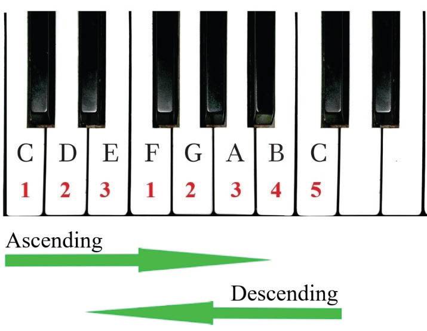

Playing major scales on the piano
Playing major scales on the piano is an important skill for learning music. It normally follows a pattern of whole and half steps that form a major scale. To play major scales, pianists must understand the correct fingering for each scale to play smoothly and quickly.
How to play the C major scale on the piano
Only the white keys are used when playing C major scale on the piano. In order to master playing this scale on the piano, you are advised to start practising one hand after another in the ascending order and later in the descending order. After you have mastered playing with each hand separately, you can play the scale with both hands.
Activity 6.17
The following figures show how the C major scale is played on a piano using the right and left hands. Observe the figures and perform the following tasks.
Note that the numbers on the piano keyboard indicate fingering. Finger number 1 starts on note C for the right hand, while finger number 5 starts on note C for the left hand.
Figure (a)
